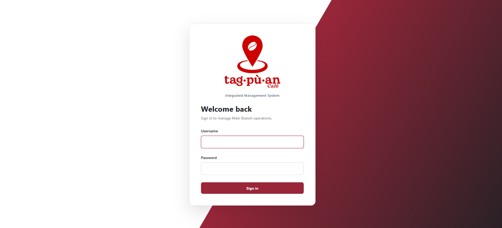
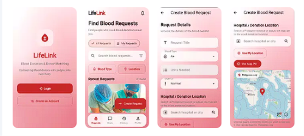

Research & coordination
PROJECT CONTRIBUTIONS
Requirements research · Project planning · Team communication · System documentation · Testing & troubleshooting
Hello, I’m
Learning with purpose.
Bringing clarity to ideas, systems,
and the work we build together.
I’m Leslie, a third-year Bachelor of Science in Information Technology student at Northeastern College.
I’m interested in the planning behind digital systems: understanding what people need, organizing information, and helping a team turn ideas into clear, useful work.
Through academic projects, I contribute to research, coordination, documentation, and testing while building my knowledge of databases, applications, and networking.
BS Information Technology · Currently enrolled, third year
Quirino General High School — Senior High School, HUMSS, 2021–2023
Quirino General High School — Junior High School
Zamora Elementary School — Elementary Education
Practical team contributions, supported by academic exposure and continuous learning.
PROJECT CONTRIBUTIONS
Requirements research · Project planning · Team communication · System documentation · Testing & troubleshooting
ACADEMIC EXPOSURE
MySQL · Supabase · Relational databases · PHP · PDO · XAMPP · Flutter · Authentication & access policies
COURSEWORK & TRAINING
Networking fundamentals · Cisco Packet Tracer · Computer systems servicing · Network & server setup · Security concepts
Two collaborative projects.
A closer look at my role in each.

A database-backed academic project focused on café operations and the organization of business information.
MY ROLE
Project Coordinator, Researcher & Documenter
I learned how structured requirements and clear documentation help teams understand business workflows.

A blood donation and donor-matching mobile application project, with workflows for profiles, requests, scheduling, and messaging.
MY ROLE
Project Leader & Tester
The project strengthened my understanding of data accuracy and collaborative mobile development.
18 learning records: 17 certificates and one webinar evaluation receipt, with its certificate pending. Explore the documents below.
Cisco records are course completions; Microsoft Learn records are learning achievements. TESDA records are individual course completions and do not represent a National Certificate II qualification.
DOST Rizal and DICT Palawan webinars on AI design and emerging technology careers.
Four seminars during Northeastern College’s 10th I.T. Week, covering programming, video editing, IoT, and agentic AI.
Cisco networking courses, Microsoft Learn achievements, and an introduction to computer systems servicing.
Further TESDA Online Program courses in computer configuration, maintenance, networks, and servers.
Education, academic projects, and professional development.
I’m interested in learning opportunities, thoughtful collaborations, and conversations about technology.
Based in Santiago City, Isabela, Philippines.
Public contact details will be added here when available.